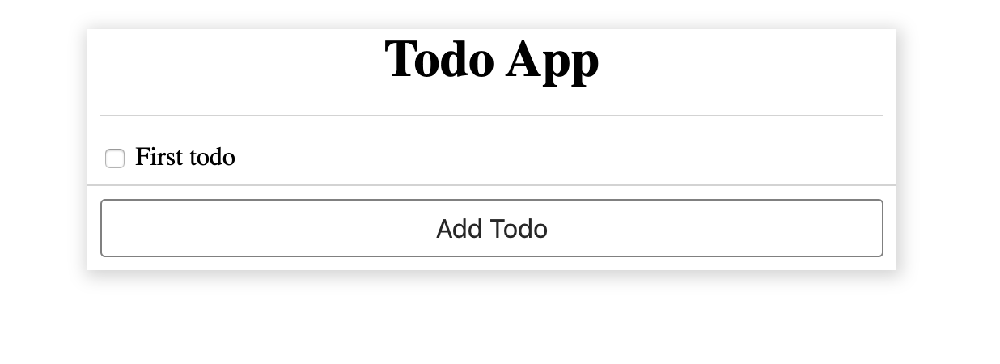

Step by step tutorial
Create a simple todo app
We're going to be building a simple todo-app in this step-by-step tutorial.
Pre-requisites:
Hope you have a basic knowledge of the following technologies:
- Javascript
- React
- HTML
- CSS
If you're good with the above pre-requisites, then let's start the show...
First of all clone this repo:
git clone https://github.com/AkashBabu/supervised-emitter.git
Then let's scaffold a basic folder structure for a simple web-app; todo that please point your current-working directory to example/simple-todo-app-tutorial within this project. This sample scaffolded structure includes a basic setup with [parcel-bundler][1] for building and serving your page (along with HMR).
Now install all the dependencies by running:
npm install
Then start the UI server:
npm start
Open http://localhost:1234 in your browser and you should see

Disclaimer : The intention of this tutorial is NOT to teach [ReactJS][2], instead it's about inducting Supervised-Emitter only! Hence the boilerplate would include a completely functional code. Your job would be to modify the code and adapt Supervised-Emitter in the project and know how easy it becomes thereafter.
This is how the components in this project are connected:
App
+ Todo
- TodoItem
- NewTodo
+ TodoAdd
- Button
As you might have noticed, folder structure is not as a typical [ReactJS][2] project, this is intentional to illustrate the nesting of components.
Enough of talking, let's get our hands dirty with Supervised-Emitter
So let's go and install Supervised-Emitter:
npm i supervised-emitter -S
Then create a new file src/supervisedEmitter.js:
import SupervisedEmitter from 'supervised-emitter';
const SE = new SupervisedEmitter();
export default SE;
This file would create an instance and we can use the same throughout our application for communicating between components, state-management etc...
Let's create our first event publisher in src/Todo/TodoItem.jsx:
import SE from '../supervisedEmitter'
and then create a function handleChange:
function handleChange() {
SE.publish('input/text/todo/item/change', todo)
}
Then change the onChange handler to handleChange:
<input type="checkbox" name="todo_checkbox" checked={todo.completed} onChange={handleChange} id={itemId} />
Now your TodoItem.jsx should look like this
import React from 'react'
import SE from '../supervisedEmitter'
export default function TodoItem({todo, onChange}) {
let style = {}
if(todo.completed) {
style = {
color: 'grey',
fontStyle: 'italic',
textDecoration: 'line-through'
}
}
function handleChange() {
SE.publish('input/text/todo/item/change', todo)
}
const itemId = `todoitem_${todo.id}`
return (
<div style={{padding: '0.5em', borderBottom: '1px solid lightgrey'}}>
<label htmlFor={itemId}>
<input type="checkbox" name="todo_checkbox" checked={todo.completed} onChange={handleChange} id={itemId} />
<span style={style}>{todo.data}</span>
</label>
</div>
)
}
What the above code essentially means is that, I don't care if anybody is listening to my changes or not, but I'm simplying gonna be yelling about it.
It's a pity that nobody is listening to our TodoItem's events, so let's create our first listener at Todo.jsx
Add SE to your imports:
import SE from '../supervisedEmitter';
Then remove the onChange handler which was eariler passed to TodoItem.jsx and add a SE listener, so your Todo component should now look like:
export default function Todo() {
const [todos, setTodos] = useState([{ id: 0, data: 'First todo', completed: false }])
const [addTodoDisabled, setAddTodoDisabled] = useState(false);
const [newTodoValue, setNewTodoValue] = useState('')
useEffect(() => {
const subscription = SE.subscribe('input/text/todo/item/change', ({data: {index, todo}}) => {
todo.completed = !todo.completed;
todos[index] = todo;
setTodos([...todos])
})
// This is very important!!!
// If omitted, it will result in multiple subscriptions
return subscription.unsubscribe;
}, [todos])
// function handleTodoChange(i) {
// return (todo) => {
// console.log('handling todo change in function');
// todos[i].completed = !todo.completed
// setTodos([...todos])
// }
// }
function handleAddTodo() {
setAddTodoDisabled(true)
}
function handleNewTodoChange(val) {
setNewTodoValue(val)
}
function handleNewTodoSubmit() {
setTodos([...todos, {
completed: false,
id: todos.length,
data: newTodoValue
}])
setAddTodoDisabled(false),
setNewTodoValue('')
}
return (
<div style={{
boxShadow: '1px 2px 10px 2px lightgrey',
}}>
<div style={{ textAlign: 'center', margin: '0.5em', marginTop: '1em', borderBottom: '1px solid lightgrey' }}>
<h1 style={{ margin: '0.5em' }}>Todo App</h1>
</div>
<div>
{todos.map((todo, i) => <TodoItem key={todo.id} index={i} todo={todo}
// onChange={handleTodoChange(i)}
/>)}
</div>
{addTodoDisabled && <NewTodo value={newTodoValue} onChange={handleNewTodoChange} onSubmit={handleNewTodoSubmit} />}
<TodoAdd disabled={addTodoDisabled} onClick={handleAddTodo} />
</div>
)
}
Now it's time for more practise...
Let's go ahead and modify NewTodo.jsx to adapt to Supervised-Emitter.
Please take a moment to do it yourself before proceeding further
After necessary modifications to NewTodo.jsx it will look like below
(Note that we've highlight the changes as comments):
import React from 'react'
import SE from '../supervisedEmitter'
export default function NewTodo({value, /* onChange, onSubmit */}) {
function handleSubmit(e) {
e.preventDefault();
SE.publish('form/submit/new-todo');
// onSubmit();
}
function handleChange(e) {
SE.publish('input/text/new-todo/change', e.target.value);
// onChange(e.target.value);
}
return (
<form style={{
padding: '0.5em'
}} onSubmit={handleSubmit}>
<input type="text" style={{
width: '100%',
border: 'none',
borderBottom: '1px solid blue',
outline: 'none',
fontSize: '0.75em'
}}
value={value}
onChange={handleChange}
autoFocus
/>
</form>
)
}
Let's add corresponding listeners to Todo.jsx by chaining subscriptions.
Modify the useEffect hook like below:
useEffect(() => {
const subscription = SE.subscribe('input/text/todo/item/change', ({ data: { index, todo } }) => handleTodoChange(index, todo))
.subscribe('input/text/new-todo/change', ({ data }) => handleNewTodoChange(data))
.subscribe('form/submit/new-todo', ({data}) => handleNewTodoSubmit(data))
return subscription.unsubscribe;
}, [todos, newTodoValue])
function handleTodoChange(index, todo) {
todo.completed = !todo.completed;
todos[index] = todo;
setTodos([...todos])
}
The above is apparently JS, so you've got all the freedom to adapt functional programming or any other pattern of your choice.
Now finally we're left with TodoAdd.jsx
Please find the corresponding modifications below:
TodoAdd.jsx would be modified to:
import React from 'react'
import Button from './Button/Button'
import SE from '../../supervisedEmitter'
export default function TodoAdd({disabled, /* onClick */}) {
return (
<div style={{padding: '0.5em'}}>
<Button
disabled={disabled}
onClick={() => SE.publish('button/click/todo-add')}
>
Add Todo
</Button>
</div>
)
}
Let's add TodoAdd button click listener to Todo.jsx
Modify useEffect hook to look like below:
useEffect(() => {
const subscription = SE.subscribe('input/text/todo/item/change', ({ data: { index, todo } }) => handleTodoChange(index, todo))
.subscribe('input/text/new-todo/change', ({ data }) => handleNewTodoChange(data))
.subscribe('form/submit/new-todo', handleNewTodoSubmit)
.subscribe('button/click/todo-add', handleAddTodo)
return subscription.unsubscribe;
}, [todos, newTodoValue])
That's it for the tutorial.
Summary
Instead of passing the handler functions deep down the nested tree, think about publishing an semantic event (follow good naming convention for events)
- This not only reduces the code, but also reduces the friction when composing components together. i.e, container don't have to worry about all the handlers that needs to be passed, instead it can pick up only the interested events.
Also to mention this library can handle state-management with ease. (Recipe guide in progress...)
This will help in cross communication between components
Since this is an event emitter library, it can update only the changed part of the tree without disturbing/re-rendering the whole tree